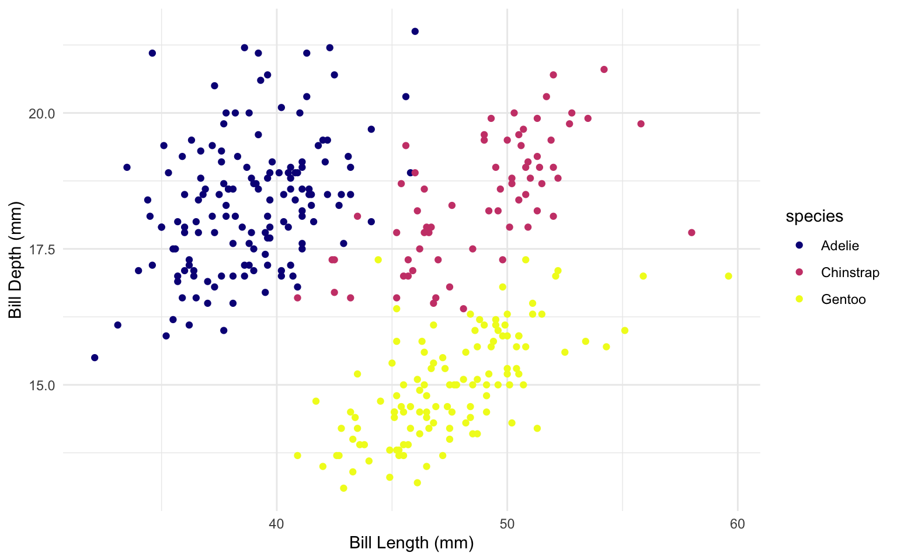
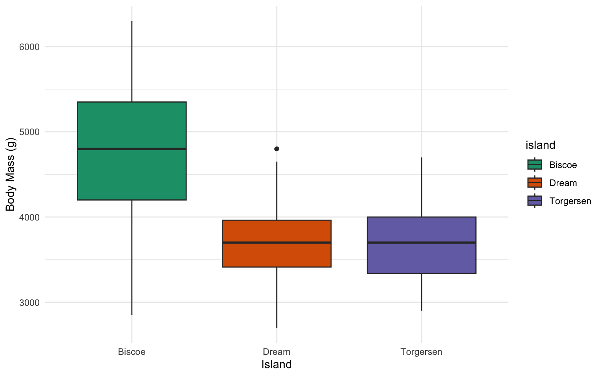
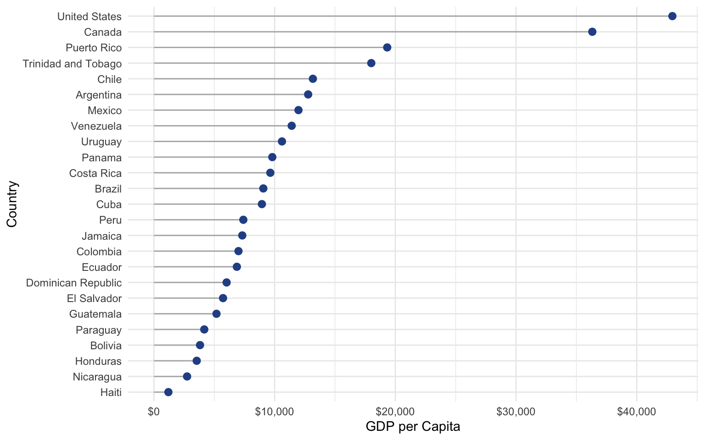

Project Dashboard
Penguins
Gapminder
Bill Dimensions by Species

Expand
Body Mass Distribution by Island

Expand
GDP Ranking (Lollipop)
Interactive Life Expectancy
2007 GDP per Capita in the Americas

Expand
Life Expectancy vs GDP (Interactive)
Expand
Expand